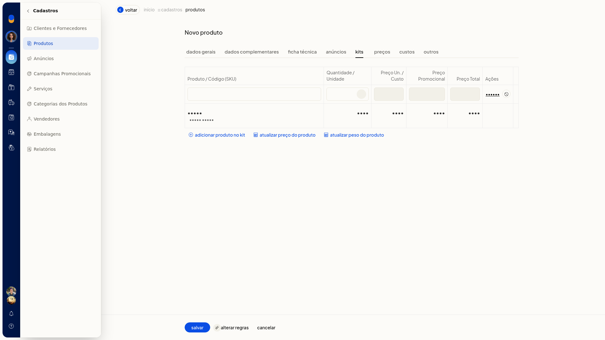
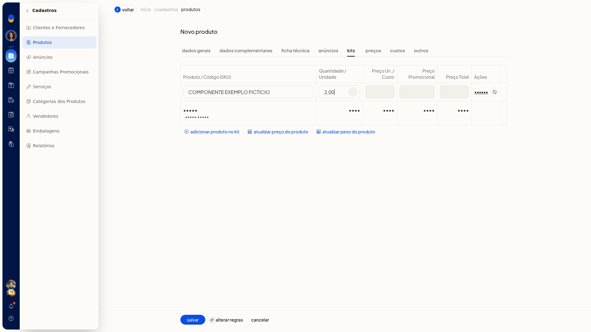
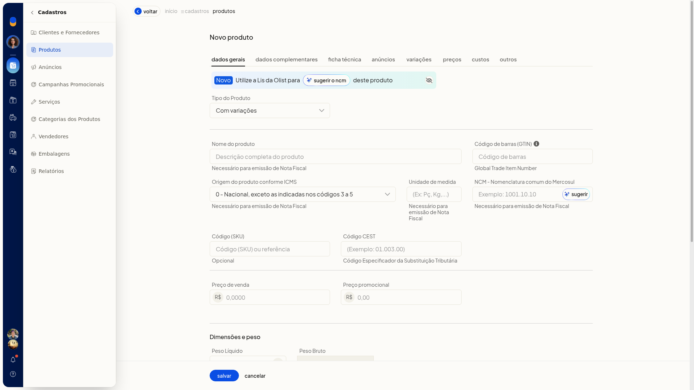
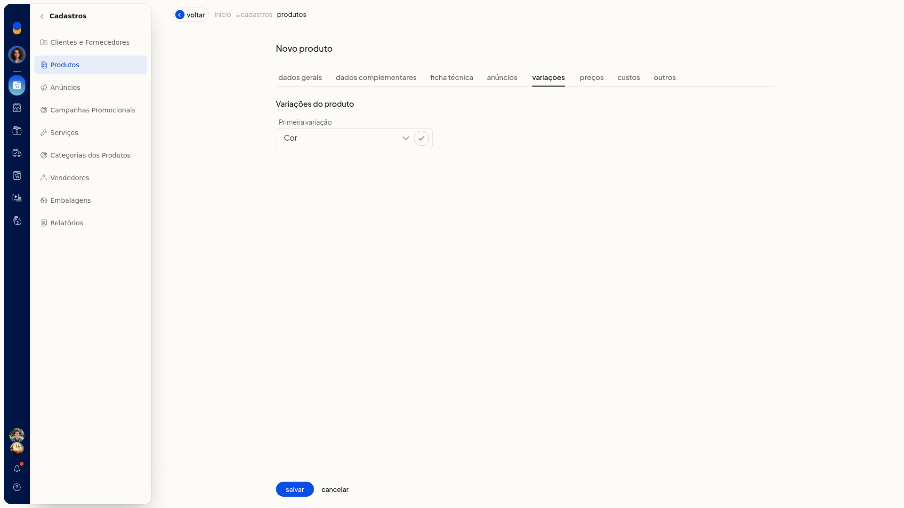
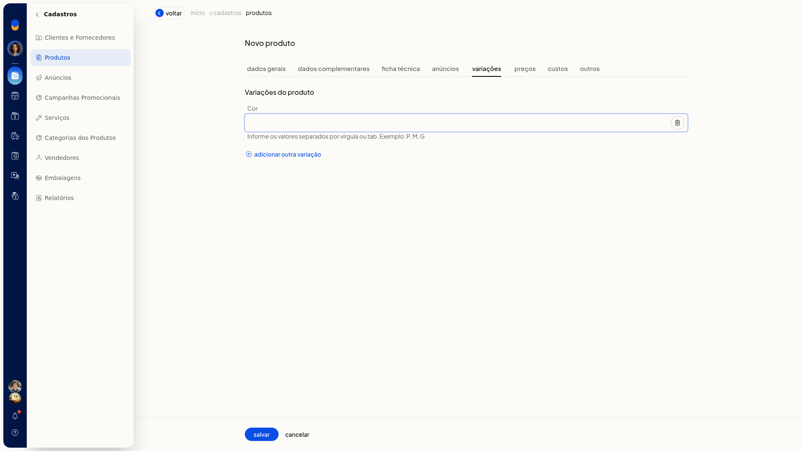
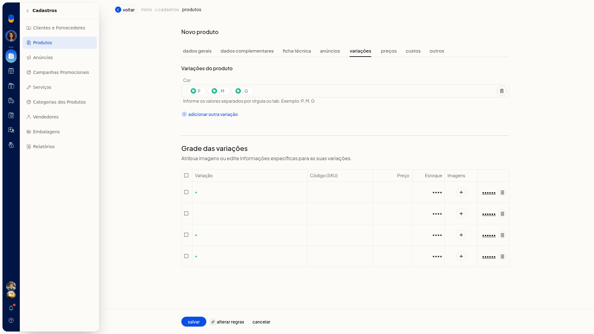
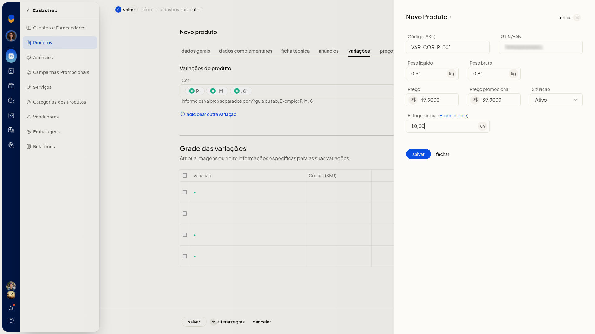
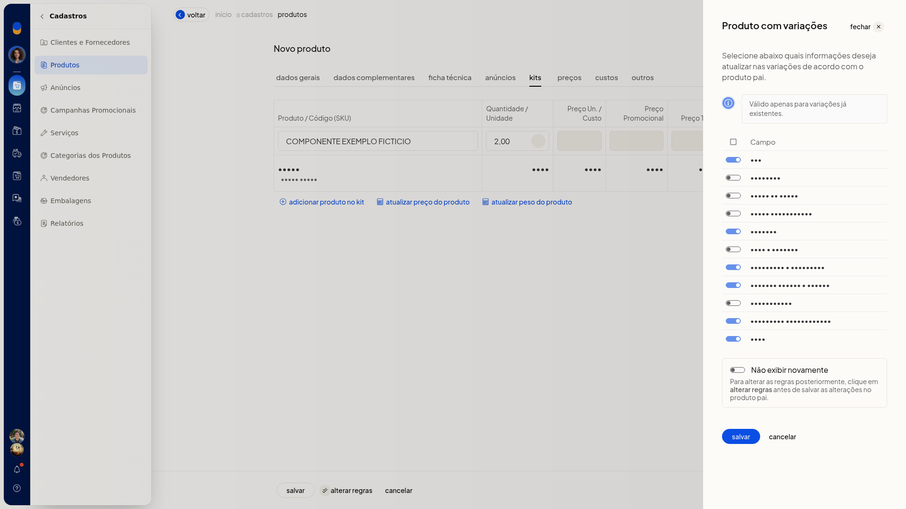

Kits: cadastro, kits com variações e limites do sistema
No ERP da Olist, você cadastra um produto do tipo kit e monta a composição com componentes já cadastrados. Na composição, você informa o produto e a quantidade e confere os preços calculados na tela.
No mesmo cadastro, o tipo Com variações gera a grade de variações para você editar os dados de cada SKU. Esse tipo não usa a composição de kit. O cadastro fica em Cadastros > Produtos.
Pré-requisitos
- Os componentes precisam já existir como produtos. Na composição, um nome que não está cadastrado é sinalizado como produto não encontrado.
Importante
- A composição do kit aceita no máximo 20 produtos. Ao atingir o limite, a ficha exibe Não é possível incluir mais de 20 produtos na composição do kit.
- A ficha exibe Você não pode cadastrar mais de 50 anúncios por produto.
Instruções
Cadastrar um kit
-
Acesse Cadastros > Produtos.
-
Clique em Incluir produto.
-
Em Tipo do Produto, selecione Kit.
-
Preencha os dados gerais do produto, como Nome, Código (SKU), Unidade, Preço de venda e Preço promocional. Nos preços, use vírgula para separar os centavos.
-
Na composição do kit, clique em Adicionar produto no kit.

-
Informe um produto já cadastrado e a quantidade. Na quantidade, use vírgula para separar os decimais, junto da unidade.

-
Confira o preço unitário, o preço promocional e o preço total de cada linha, além dos totais da composição. Esses preços da linha não são editáveis.
-
Se quiser recalcular o preço ou o peso do kit, clique em Atualizar preço do produto ou em Atualizar peso do produto.
-
Clique em Salvar para gravar o kit.
Cadastrar um produto com variações
-
Acesse Cadastros > Produtos.
-
Clique em Incluir produto.
-
Em Tipo do Produto, selecione Com variações. A aba de kit deixa de aparecer. Surgem a aba Variações e o campo Depósito padrão, depósito utilizado para as variações.

-
Preencha os dados gerais do produto.
-
Em Variações, escolha a primeira variação, por exemplo Cor, e confirme.

-
Informe os valores separados por vírgula ou tab. O exemplo da tela é P, M, G. Se precisar de outra característica, clique em Adicionar outra variação.

-
Confira a grade gerada. A orientação da tela é Atribua imagens ou edite informações específicas para as suas variações. Em cada linha, use editar ou excluir.

-
Clique em editar e preencha Código (SKU), GTIN/EAN, peso líquido, peso bruto, preço, preço promocional, Situação e estoque inicial (e-commerce). Nos pesos, preços e estoque, use vírgula para separar os decimais. Em Situação, as opções são Ativo e Inativo. Esse modal não tem composição de kit.

-
Para definir quais dados acompanham as variações já existentes, clique em Alterar regras. No modal Produto com variações, marque o que atualizar: NCM, GTIN/EAN, Preço de venda, Preço promocional, Unidade, Peso e volumes, Embalagem e dimensões, Estoque mínimo e máximo, Localização, Descrição complementar e Tags. Também há Não exibir novamente. Clique em Cancelar se não for gravar essa alteração.

-
Clique em Salvar para gravar o produto com a grade de variações.
Informações adicionais
O kit na tela, na planilha, na API e na Lis
- Interface/Tela: criar sim, atualizar sim
- Lote (Planilha): criar não, atualizar sim
- API V3: criar não, atualizar sim
- Lis: criar não, atualizar sim